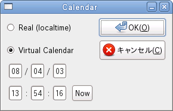

エミュレーション中のカレンダにローカルタイムを使用します。
常にねこープロジェクトIIを起動しているマシンの時間をエミュレーションで使用します。 エミュレーションで設定した時刻は反映されません。
エミュレート内のカレンダに仮想カレンダを使用します。 エミュレーション中の時間は現実時刻と別にカウントされ、時間経過はエミュレーションに依存します。
エミュレート内の仮想カレンダを現在時刻にセットします